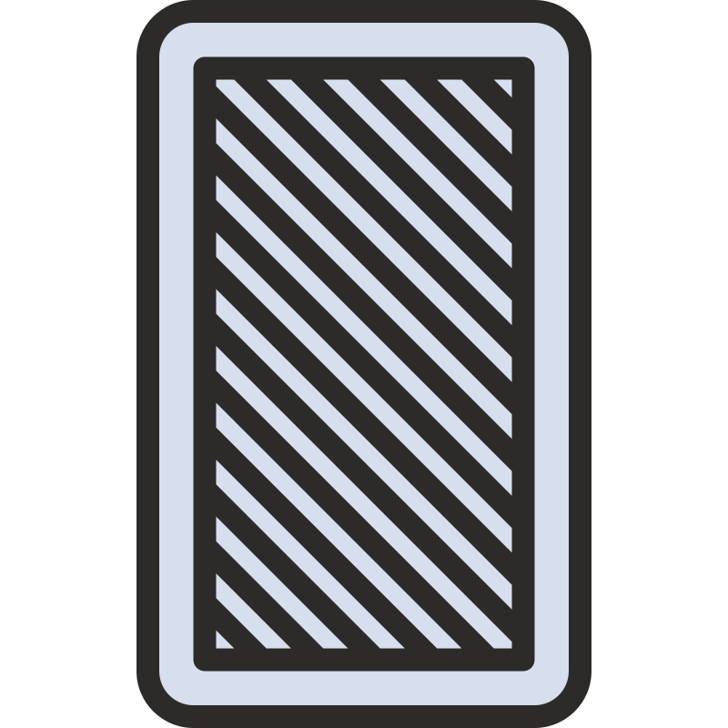

<ion-header>
  <ion-toolbar>
    <ion-buttons slot="start">
      <ion-button (click)="goBack()">Atrás</ion-button>
    </ion-buttons>
    <div class="timer">Tiempo: {{ timer }}.{{milisegundos}}</div>
    <ion-buttons slot="end">
      <ion-button (click)="logout()">Cerrar Sesión</ion-button>
    </ion-buttons>
  </ion-toolbar>
</ion-header>
<ion-content>
  <div class="game-grid">
    <div *ngFor="let card of cards; let i = index" class="card" (click)="flipCard(i)">
      
      
    </div>
  </div>
</ion-content>
